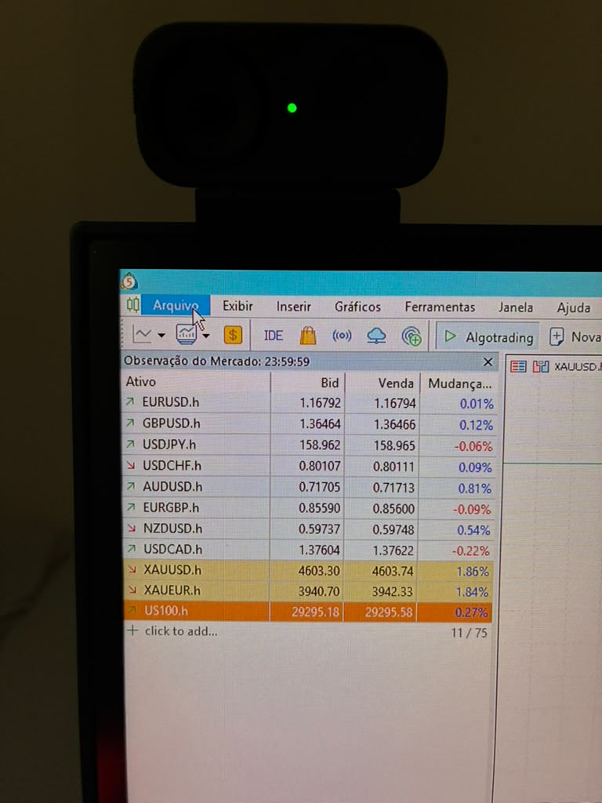
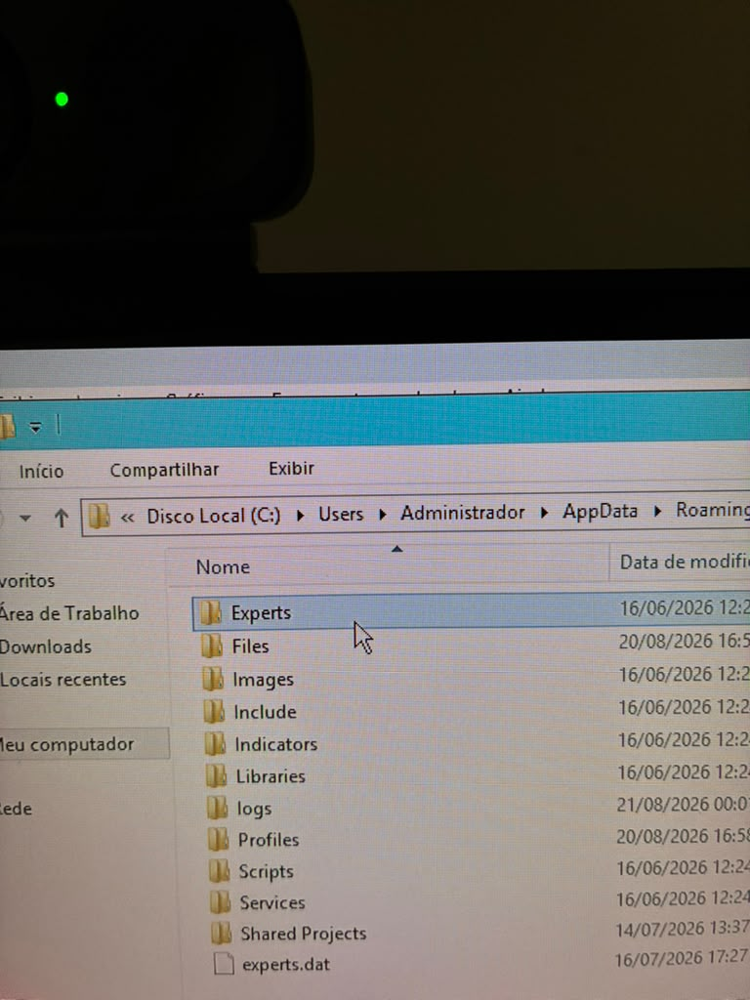
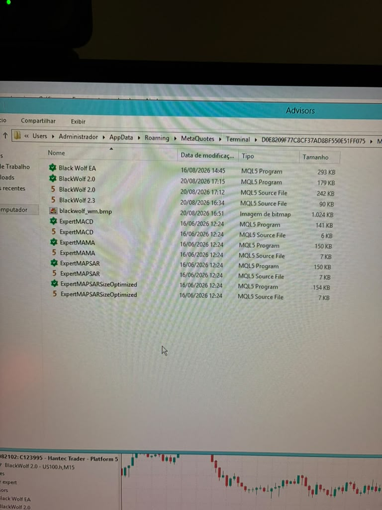
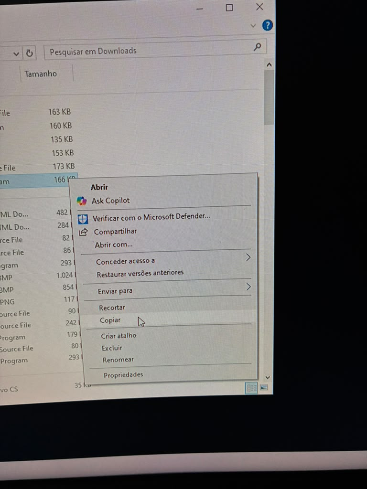
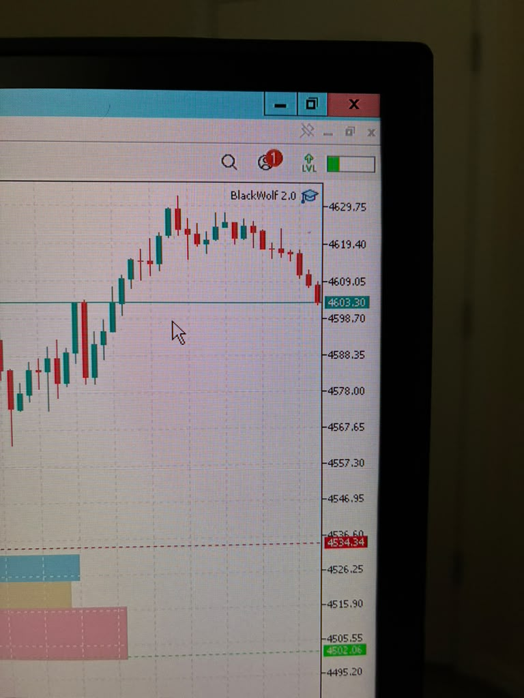
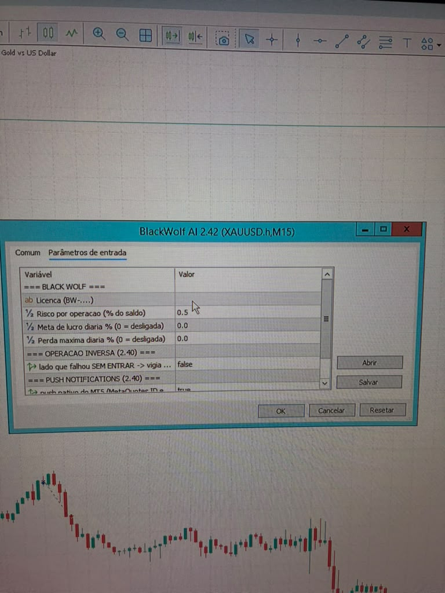

Um passo a passo objetivo para colocar o arquivo do robô no MetaTrader 5 e concluir a configuração inicial.
Material de apoio técnico. Operação automatizada envolve risco e não há garantia de resultado.Baixe o arquivo disponibilizado no painel, siga as telas abaixo e só então configure a sua licença nos parâmetros do robô.
No MetaTrader 5, clique em File e depois em Open Data Folder.

Na pasta aberta, entre em MQL5, depois em Experts e, quando existir, em Advisors. Coloque ali o arquivo que você baixou no painel.


Volte ao MetaTrader. No Navegador, clique com o botão direito em Expert Advisors e selecione Atualizar. O robô deve aparecer na lista.

Abra o gráfico indicado no seu material de onboarding e arraste o robô disponível no Navegador para dentro dele. Na janela de propriedades, habilite o trading algorítmico se o terminal solicitar.

Na aba Parâmetros de entrada / Inputs, insira a sua licença e revise os parâmetros disponíveis. Use limites de risco coerentes com a sua situação e com as regras do ambiente onde opera.
